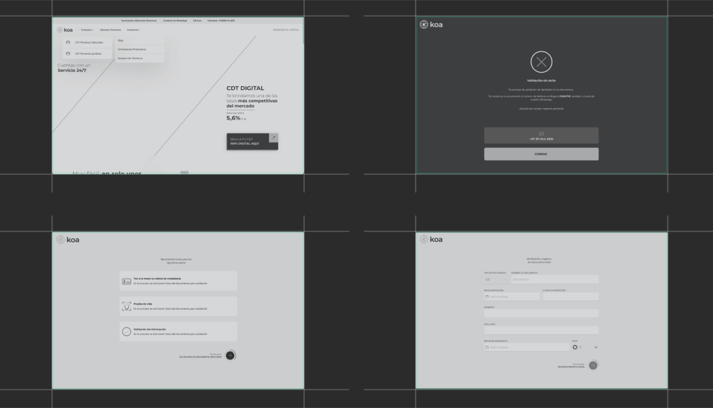
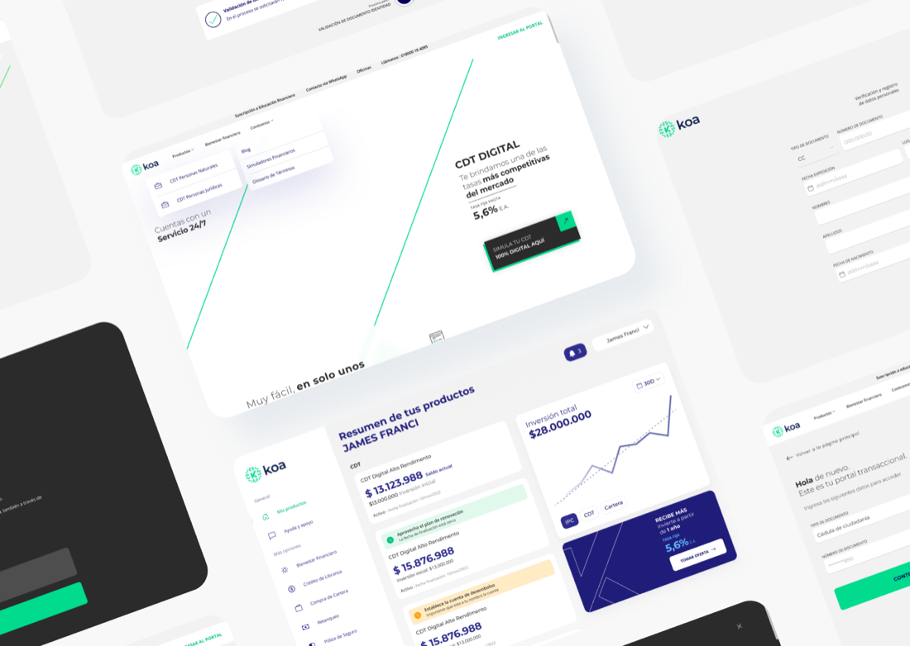
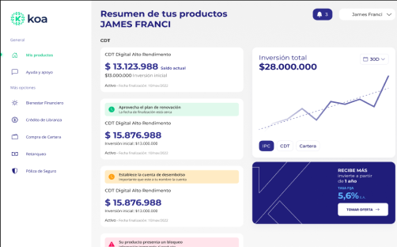
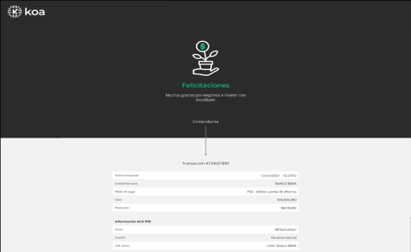
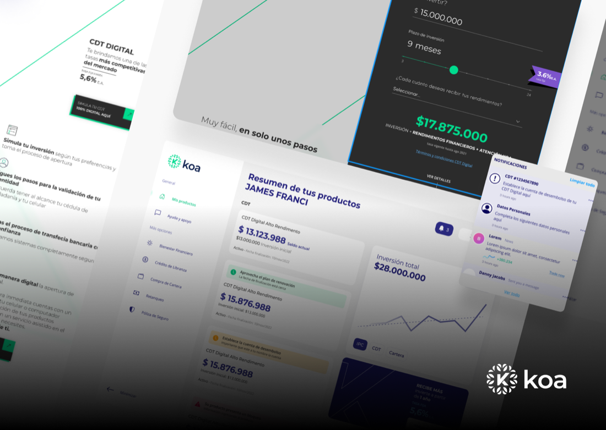

00 · Executive summary12 weeks
A redesign of the Koa digital bank website, with a new sitemap and a contemporary look, so people can open a digital CDT and manage their products in a few steps.
12wk
Five design-thinking phases
15
In-depth interviews, 45 minutes each
180
Active users surveyed
7.3/10
Usability satisfaction before the redesign
Problem
Users struggled to complete tasks and find information, and the design system was inconsistent.
Approach
Qualitative and quantitative research, personas, a new IA, low and hi-fi wireframes, and usability studies.
Outcome
A creative, minimalist site with a digital CDT flow, a simulator, and a dashboard for every product.
Design strategy · twelve weeksFig. A
W1–3W4–6W7–9W10–12
Empathize · 2w
Define · 2w
Ideate · 3w
Prototype · 3w
Test · 2w
Step 01 / 05Weeks 1–2
01
Empathize
GoalUnderstand needs and expectations of users aged 18 to 45, with both qualitative and quantitative data.
Qualitative · 15 interviewsFig. B
In-person sessions of about 45 minutes, with consent forms and 12 questions.
Quantitative · 180 usersFig. C
An email and social survey with 12 questions, including Likert scales.
CHANGE
Simplified navigation
Redefine menus and how information is organized.
CHANGE
Minimalist design
Soft, clean colors and understated visuals.
CHANGE
Information hierarchy
Emphasize key information on every page.
CHANGE
CTA optimization
More visible, more effective buttons.
CHANGE
Consistent brand assets
Uniform, modern, understandable icons.
NEW
Automated savings
Set up and manage savings easily.
Step 02 / 05Weeks 3–4
02
Define
GoalDesign for people who want efficient, secure banking without friction.
PM
Pamela Martínez, 20Tech-savvy student
- Pain
- Little financial experience; fear of making mistakes online.
- Uses Koa to
- Check balances, transfer money, and pay university expenses.
AL
Alejandro López, 33Lawyer
- Pain
- Concerned about online security; no time to manage finances.
- Uses Koa to
- Manage accounts and payments, and make investments.
USER STORY 01
I want streamlined, well-organized information to find essential data without unnecessary clicks.
USER STORY 02
I want enhanced CTAs and a simpler UI to complete financial tasks with confidence.
USER STORY 03
I want clear data presentation to tailor the platform and make informed decisions.
Step 03 / 05Weeks 5–7
03
Ideate
GoalThree clear paths: simulate, open a CDT, and manage products.
Information architectureFig. D
Open Koa→Sign up/Login
Simulator CDTInvestment · periodPerformance · comparisonSend simulation
Open personal CDTOnboarding · personal dataPassword · T&CsDigital signature · pre-bank
DashboardMy products · supportFinancial well-being · loansRefinancing · insurance

Step 04 / 05Weeks 8–10
04
Prototype
GoalA visual style that feels modern and calm, as users asked.
Style guide
#00DB90#06005A#231F20#EB5757Montserrat, semibold and regular. Green leads, navy grounds.

Step 05 / 05Weeks 11–12
05
Key features
GoalMake opening and following a CDT feel easy, from simulation to receipt.
DASHBOARD
Every product at a glance
Investments, accounts, and assets in one overview.

RECORDS
Every transaction, recorded
On the platform or through linked channels like email.

06 · ResultsNew website
06
A bank that feels modern
OutcomeA contemporary website with a clear sitemap, a consistent design system, and a guided digital CDT.
CLARITY
Three clear paths
Simulate, open, and manage, from the first screen.
CONSISTENCY
One design system
Colors, type, and icons aligned across the site.
TRUST
Clean and calm
The clean, sober colors 46% of users preferred.
Evidence
New site Dashboard Receipt Wireframes

Next case · 19 / 21Naha Health
→